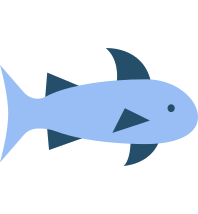

О компании
Это — наш яхтенный порт, который по праву считается старейшим отраслевым предприятием на акватории. Сегодня это динамично развивающееся предприятие, предлагающее все возможные услуги для водного транспорта и только качественный сервис своим клиентам и партнерам.
Общая протяженность береговой линии – около 1,5 км, площадь около 5 гектар, на которых находятся 10 причалов с удобным подъездом. Прямо к пирсам примыкают парковки автомобилей для членов клуба и их гостей. Сегодня наш яхт-клуб — это оборудованная марина, не уступающая своим уровнем оснащенности, количеством и качеством услуг европейским яхтенным портам. Благодаря естественным преимуществам — наличию большой территории, акватории и глубинам — яхт-клуб сосредоточился на оказании услуг и привлечению, в первую очередь, крупнотоннажных судов и моторных яхт длиной 50 и более футов. В число услуг входит полный комплекс обслуживания и ремонта судов, яхт и катеров, а также первая на акватории круглосуточная плавучая топливная заправка.
Любая яхта или лодка прямо от нас способна отправиться в дальнее плавание. На протяжении многих лет к специалистам порта и яхт-клуба постоянно обращались с просьбой продать или подобрать судно. В связи с этим было принято решение создать команду из профессионалов с опытом в этой области и готовностью заниматься продажами яхт и катеров круглый год. Так и появилась наша территория продаж «Sailor`s Boat». Сейчас у нас есть свой пирс продаж на акватории яхт-клуба и площадка продаж. У нас очень выгодные условия для тех, кто хочет приобрести себе судно!
